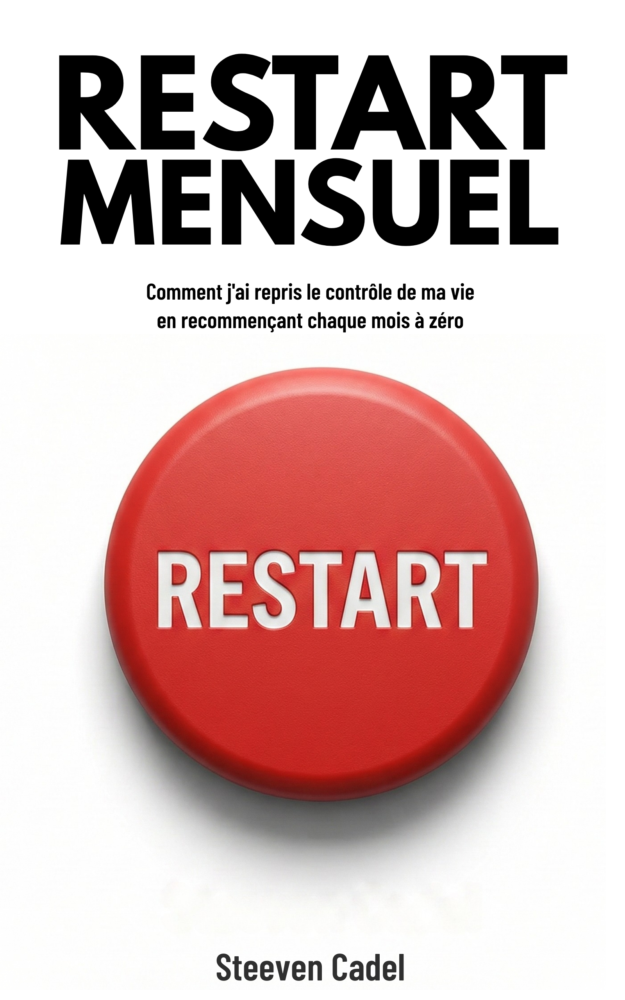

"On ne peut pas résoudre un problème avec le même niveau de pensée que celui qui l'a créé."
— Albert Einstein

Comment j'ai repris le contrôle de ma vie en recommençant chaque mois à zéro.
Commander le livre → Faites le test : quel est votre niveau d'organisation ?Disponible sur Amazon ou chez votre libraire préféré. Pour toute commande, recevez une masterclass exclusive d'1 heure offerte pour aller plus loin dans la mise en place de votre Restart Mensuel. Envoyez votre preuve d'achat à contact@steevencadel.fr pour recevoir votre invitation.
Vos listes de tâches s'allongent mais rien d'important ne se fait vraiment
Vous avez essayé des dizaines d'outils et méthodes de productivité sans résultat durable
Vous vous sentez submergé par la charge mentale et les Post-its qui s'accumulent
Vous cherchez une méthode simple, concrète et applicable immédiatement
15 chapitres pour transformer votre façon de vous organiser.
Le Restart Mensuel, c'est l'idée radicale que tout ce qui n'est pas consciemment reconduit mérite de disparaître. Chaque tâche qui migre vers le nouveau mois est une tâche que vous avez décidé de garder. Les autres s'effacent — et avec elles, le poids mental de tout ce qui encombrait votre vie sans jamais être fait.
Ce livre est né de plusieurs années d'expérimentation. Des Post-its au Bullet Journal, de Trello à Todoist, l'auteur a tout testé avant de créer sa propre méthode — hybride, numérique et profondément intentionnelle.

Disponible sur Amazon ou chez votre libraire préféré. Une masterclass exclusive d'1 heure pour aller plus loin dans la mise en place de votre Restart Mensuel. Valeur : inestimable. Prix : offert avec votre commande.
Commandez le livre sur Amazon ou chez votre libraire
Envoyez votre preuve d'achat à contact@steevencadel.fr
Recevez votre invitation à la masterclass